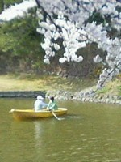
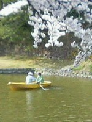
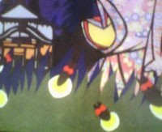
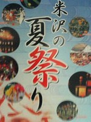
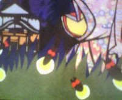
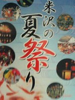
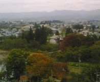
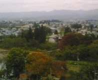
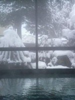
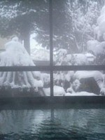

Seasons
Spring
Cherry blossoms are in full bloom at the end of April in the northern area of Japan. People enjoy picturesque view at this time of the year.
 
 
Summer
Early summer is the rainy season called "Tsuyu" in Japan. It rains so much during this period. Hydrangeas are beautiful at this time.
Various festivals are held in summer. Since Onogawa is known as the firefly's natural habitat, many people visit this local town to see fire flies.
  
 
Fall
In Fall, leaves of trees turn red, brown, and yellow. People enjoy both hot springs and red maple trees in this season.
 

Winter
This area has heavy snow in winter. Mountains and towns are covered with snow. It's gorgeous to take hot springs, watching snow-covered garden!

 
